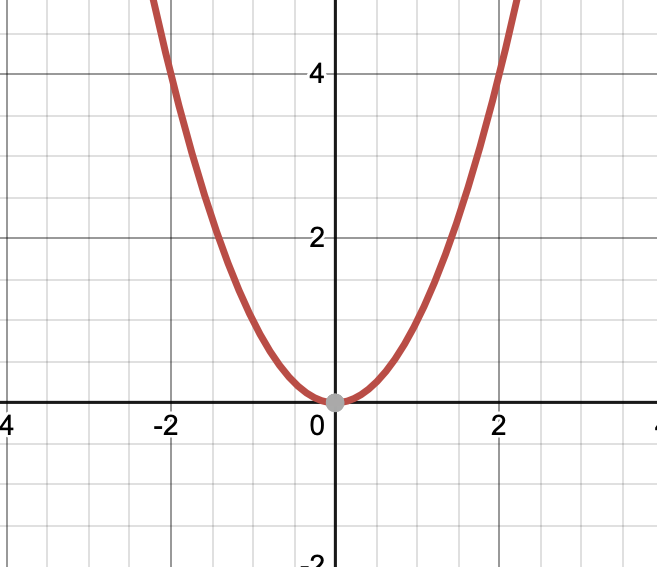

이차함수란, 변수 x와 y에 대하여 y=(x에 대한 이차식) 으로 나타낼 수 있는 함수를 뜻합니다.
함수 f(x)에 대하여. x=a일 때 대응하는 y값을 함숫값이라고 부릅니다. 이차함수 역시 함수이기 때문에 함숫값을 가집니다. 이차함수의 함숫값은 함수식에 x값을 대입해 계산합니다.
이차함수의 그래프

이차함수의 그래프는 포물선 모양으로, 이차항의 계수가 양수라면 아래로 볼록, 이차항의 계수가 음수라면 위로 볼록합니다.
y=ax^2 그래프에서 a는 그래프의 폭을 결정합니다. a의 절댓값이 커질수록 그래프의 폭이 좁아집니다.
이차함수의 표준형
y=a(x - p)^2 + p
이차함수의 표준형이라고 불리는 이 함수는 y=ax^2의 그래프를 x축의 방향으로 p만큼 y 방향으로 q만큼 평행이동한 그래프입니다.